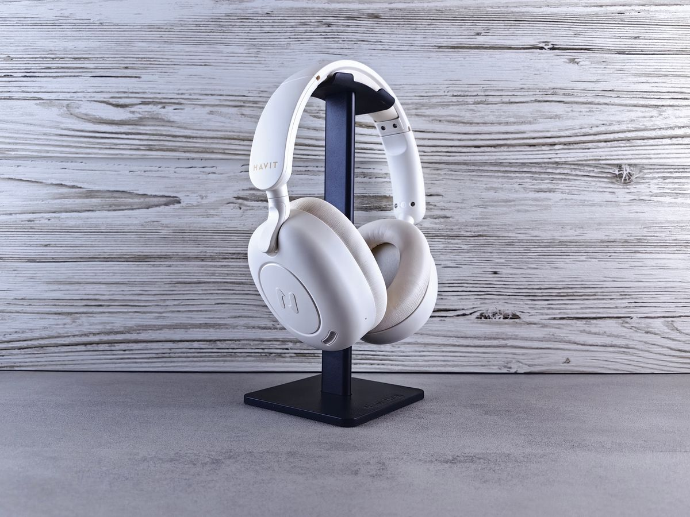
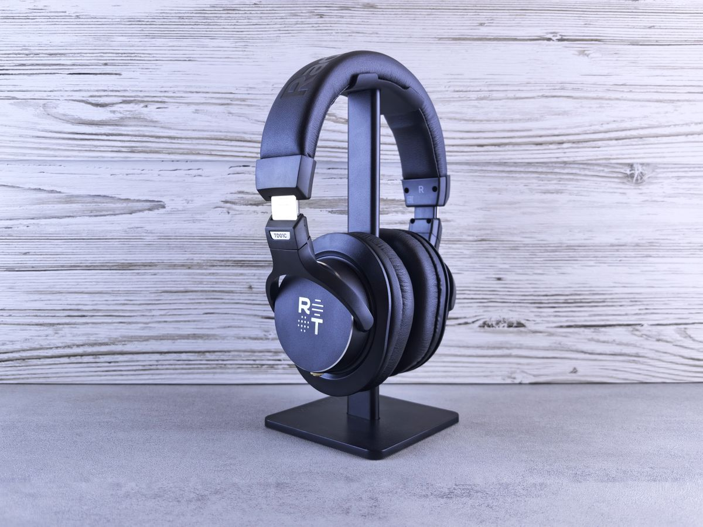
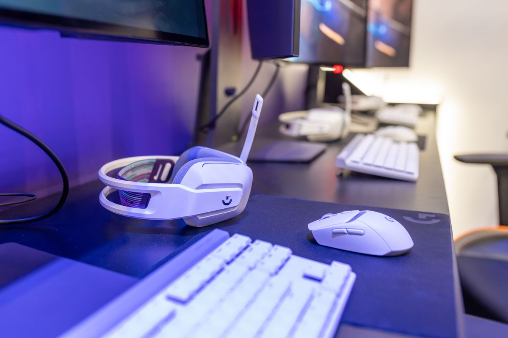
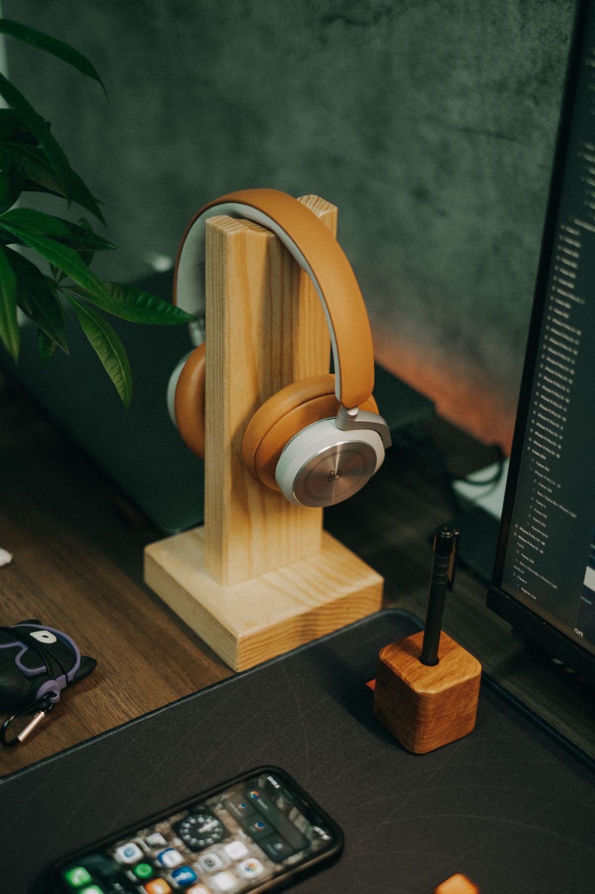

ที่วางหูฟัง (Headphone Stand) จัดโต๊ะให้เป็นระเบียบ ยืดอายุหูฟังตัวโปรด รุ่นไหนน่าซื้อ 2026
ที่วางหูฟังช่วยจัดโต๊ะให้เป็นระเบียบ ยืดอายุหูฟัง และเพิ่มพื้นที่บนโต๊ะ รวมประเภทและรุ่นที่แนะนำ พร้อมเกณฑ์การเลือกซื้อ ซื้อผ่าน Shopee
อัปเดต กรกฎาคม 2026
ถ้าคุณเป็นคนหนึ่งที่ใช้หูฟังทั้งวัน ไม่ว่าจะประชุมออนไลน์ ฟังเพลงตอนทำงาน หรือเล่นเกมช่วงพัก คำถามคือ "วางหูฟังไว้ตรงไหนตอนไม่ได้ใช้?" หลายคนวางคว่ำบนโต๊ะ พาดไว้บนจอ หรือแขวนไว้ที่ขอบชั้น สุดท้ายก็เกะกะ สายพันกัน แถมฟองน้ำครอบหูยังเสื่อมเร็วเพราะโดนกดทับตลอด ที่วางหูฟังจึงเป็นอุปกรณ์ราคาไม่แพงที่ช่วยแก้ปัญหาเหล่านี้ได้ครบในชิ้นเดียว บทความนี้จะพาไปดูว่าทำไมถึงควรมี เลือกอย่างไร และรุ่นแบบไหนที่เหมาะกับโต๊ะทำงานของคุณ
ทำไมโต๊ะทำงานถึงควรมีที่วางหูฟัง
ยืดอายุหูฟังให้ยาวขึ้น หูฟังแบบครอบหู (over-ear) ที่ดี ๆ ราคาไม่ใช่น้อย การวางคว่ำหรือกดทับบ่อย ๆ ทำให้ฟองน้ำยุบตัวและก้านคาดหัวเสียรูป การแขวนบนที่วางช่วยให้หูฟังคงรูปทรงเดิมและอากาศถ่ายเทได้ดี ลดกลิ่นอับจากเหงื่อสะสม
เพิ่มพื้นที่บนโต๊ะ หูฟังที่วางเกลื่อนกินพื้นที่มากกว่าที่คิด ที่วางแบบตั้งพื้นหรือแบบหนีบขอบโต๊ะช่วยดึงหูฟังขึ้นไป "ลอย" เหนือพื้นโต๊ะ ทำให้มีที่ว่างสำหรับเอกสารหรือของอื่นมากขึ้น
หยิบใช้สะดวก ดูเป็นระเบียบ เวลามีนัดประชุมกะทันหัน คุณจะรู้ทันทีว่าหูฟังอยู่ตรงไหน ไม่ต้องรื้อหาในลิ้นชัก และโต๊ะที่จัดเรียบร้อยยังช่วยให้สมาธิในการทำงานดีขึ้นด้วย
ประเภทของที่วางหูฟังที่ควรรู้จัก
ก่อนเลือกซื้อ ลองทำความเข้าใจรูปแบบหลัก ๆ เพื่อให้เข้ากับสไตล์โต๊ะของคุณ
แบบตั้งโต๊ะ (Desktop Stand) เป็นแท่นตั้งอิสระวางบนโต๊ะได้เลย ฐานมักถ่วงน้ำหนักให้มั่นคง เหมาะกับคนที่มีพื้นที่โต๊ะพอสมควรและอยากได้ดีไซน์สวยตั้งโชว์ บางรุ่นมีพอร์ต USB ในตัวให้เสียบชาร์จอุปกรณ์ได้ด้วย
แบบหนีบขอบโต๊ะ (Clamp/Under-desk) ยึดกับขอบโต๊ะแล้วยื่นตะขอออกมาให้แขวนหูฟังใต้โต๊ะหรือด้านข้าง ประหยัดพื้นที่บนโต๊ะได้เต็มที่ เหมาะกับโต๊ะเล็กหรือคนที่ต้องการพื้นผิวโล่ง ๆ
แบบติดผนัง/ติดกาว (Wall Mount) ติดกับผนังหรือใต้ชั้นวางด้วยกาวสองหน้าหรือสกรู เหมาะกับคนที่อยากเก็บหูฟังให้พ้นโต๊ะไปเลย
รุ่นและแบบที่แนะนำ พร้อมเหตุผลว่าทำไมถึงน่าซื้อ
ด้านล่างเป็นตัวอย่างประเภทสินค้าที่ได้รับความนิยม เลือกให้เหมาะกับงบและการใช้งานของคุณได้เลย

1. ที่วางหูฟังอะลูมิเนียมตั้งโต๊ะ ดีไซน์มินิมอล
วัสดุอะลูมิเนียมให้ความรู้สึกพรีเมียม ฐานถ่วงน้ำหนักหนักแน่นไม่ล้มง่ายแม้แขวนหูฟังหนัก ๆ ส่วนโค้งที่รองรับก้านหูฟังมักหุ้มซิลิโคนกันรอย เหมาะกับคนที่อยากได้ของสวยเข้ากับเซ็ตอัพสายมินิมอลหรือโต๊ะทำงานสไตล์ออฟฟิศทันสมัย ที่วางหูฟังอะลูมิเนียมฐานหนัก

2. ที่วางหูฟังแบบหนีบใต้โต๊ะ ประหยัดพื้นที่
เหมาะมากสำหรับโต๊ะเล็กหรือคนที่ชอบพื้นผิวโต๊ะโล่ง ๆ ติดตั้งง่ายด้วยการหนีบหรือแปะกาวใต้ขอบโต๊ะ ตะขอมักหมุนพับเก็บได้เมื่อไม่ใช้ ราคาย่อมเยาแต่ช่วยจัดระเบียบได้จริง ที่แขวนหูฟังแบบหนีบขอบโต๊ะ

3. ที่วางหูฟังพร้อมพอร์ต USB Hub ในตัว
รุ่นนี้ตอบโจทย์สายเกมเมอร์และคนทำงานที่ต้องเสียบอุปกรณ์หลายชิ้น นอกจากแขวนหูฟังแล้วยังมีพอร์ต USB ให้เสียบแฟลชไดรฟ์หรือชาร์จมือถือ ได้ประโยชน์สองต่อในชิ้นเดียว ลดจำนวนอุปกรณ์บนโต๊ะลงได้ แท่นวางหูฟังพร้อม USB hub

4. ที่วางหูฟังไม้แท้ สไตล์อบอุ่น
สำหรับคนที่ชอบโต๊ะทำงานโทนอบอุ่นแบบธรรมชาติ ที่วางไม้แท้ให้สัมผัสและลวดลายที่ไม่ซ้ำกัน เข้ากับโต๊ะไม้หรือของตกแต่งสายวอร์มโทน แถมแข็งแรงทนทานใช้ได้นาน ที่วางหูฟังไม้เนื้อแข็ง
เกณฑ์การเลือกซื้อที่วางหูฟัง
ความมั่นคงของฐาน สำหรับแบบตั้งโต๊ะ ฐานควรหนักและกว้างพอที่จะไม่ล้มง่าย โดยเฉพาะถ้าหูฟังของคุณน้ำหนักมาก ลองดูรีวิวว่าฐานถ่วงน้ำหนักดีแค่ไหน
วัสดุที่สัมผัสหูฟัง จุดที่รองรับก้านคาดหัวควรมีซิลิโคนหรือยางนุ่มหุ้ม เพื่อกันรอยขีดข่วนและไม่ทิ้งรอยกดบนหนังหรือฟองน้ำหูฟัง
ความกว้างของส่วนแขวน หูฟังบางรุ่นมีก้านคาดหัวหนา ควรเช็กว่าส่วนโค้งของที่วางกว้างพอรองรับได้พอดี ไม่ทำให้หูฟังถ่างจนเสียรูป
สไตล์ให้เข้ากับโต๊ะ เลือกวัสดุและสีให้กลมกลืนกับเซ็ตอัพ เช่น อะลูมิเนียมสีเงินเข้ากับสายมินิมอล ไม้เข้ากับโทนอบอุ่น หรือสีดำด้านเข้ากับสายเกมมิ่ง
ฟังก์ชันเสริม ถ้าโต๊ะคุณพอร์ตไม่พอ รุ่นที่มี USB hub ในตัวจะคุ้มค่ากว่า แต่ถ้าเน้นเรียบง่ายและงบจำกัด แบบพื้นฐานก็เพียงพอแล้ว
สรุป
ที่วางหูฟังเป็นอุปกรณ์เสริมเล็ก ๆ ที่ราคาไม่แพง แต่ให้ผลลัพธ์เกินตัวทั้งเรื่องความเป็นระเบียบ การถนอมหูฟังราคาแพงให้อยู่กับเราได้นานขึ้น และการยกระดับหน้าตาโต๊ะทำงานให้ดูโปรขึ้น หากคุณใช้หูฟังเป็นประจำ นี่คือการลงทุนที่คุ้มค่าและเห็นผลทันที ลองเลือกแบบที่เข้ากับพื้นที่และสไตล์ของคุณ แล้วโต๊ะทำงานจะดูดีขึ้นอย่างที่ไม่เคยคิดมาก่อน
บทความนี้มีลิงก์ affiliate เมื่อคุณซื้อผ่านลิงก์ เราอาจได้รับค่าคอมมิชชั่นโดยที่คุณไม่ต้องจ่ายเพิ่ม